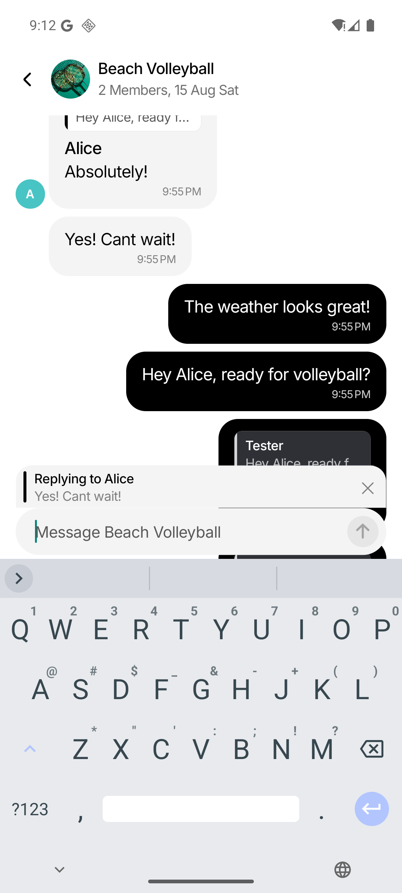
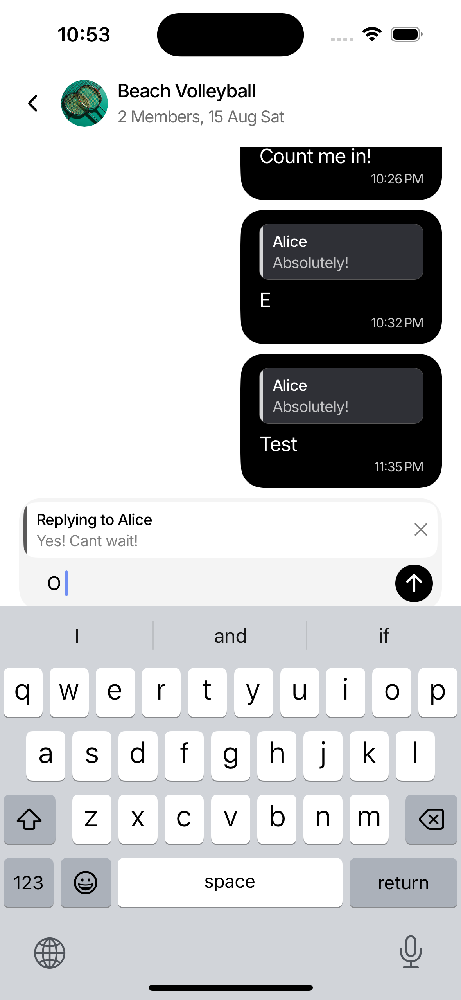

Root cause
The rail had a hard-coded 32 px height and was vertically centered, leaving visible gaps at both ends. Separate preview and input surfaces amplified the mismatch.
Mobile UI fix · 31 July 2026
The previous revision still looked assembled from two surfaces, and its fixed-height reply rail appeared cut off. The reply is now an inset card inside one rounded composer, with a neutral rail that spans the card’s complete height.
The rail had a hard-coded 32 px height and was vertically centered, leaving visible gaps at both ends. Separate preview and input surfaces amplified the mismatch.
One outer shell contains an inset quoted-message card and the input row. The card owns its smaller radius; the rail fills and is clipped by that card.
The shape rule is shared across platforms. Android keeps its corrected keyboard dock; iOS retains native keyboard avoidance.
ChatComposer so one parent owns the
background, clipping, and outer radius.
radii.md token.
alignSelf: stretch,
making it fill the card from top to bottom.
radii.pill.
Reply selection, dismissal, keyboard placement, message sending, scrolling, and quoted-message jump behavior are unchanged.
The rail floated inside the reply area instead of reaching its edges, while the preview and text field still read as separately shaped pieces.

The rail now fills the quoted card’s full height, and the card sits naturally inside one neutral composer shell above the keyboard.
